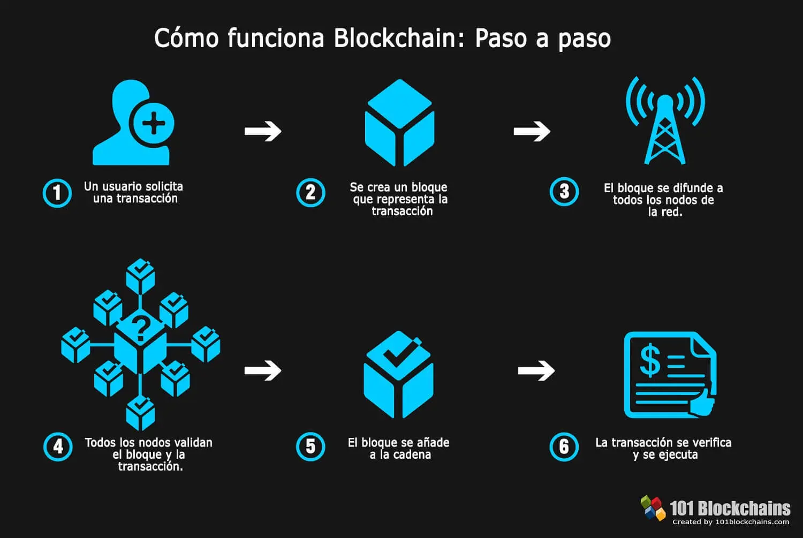

¿Qué son las Monedas Virtuales?
Las Monedas Virtuales, a las que también se les puede llamar criptodivisas o criptoactivos en algunos ámbitos, son un medio digital de intercambio. Cumple la función de una moneda, y de ahí que se las conozca con ese nombre. Sin embargo, es algo totalmente digital, que utiliza métodos criptográficos para asegurar sus transacciones financieras, controlar la creación de nuevas unidades y verificar la transferencia de activos. Por lo tanto, podemos considerarlas como una alternativa descentralizada a las monedas digitales. Con el término "descentralizada" nos referimos a que estas monedas no son controladas por un único servicio o empresa. Lo mismo pasa con las monedas convencionales, centralizadas y organizadas por entidades y bancos, por lo que son un método opuesto a ambas. La primera criptomoneda fue el Bitcoin creado por "Satoshi Nakamoto", seudónimo que corresponde a una persona que nadie sabe exactamente quién es. Esta persona publicó en 2009 un artículo en el que describía un sistema de pagos P2P al que llamó Bitcoin. Al cabo de unos meses él mismo publicó la primera versión del software que permite gestionar la red de la moneda, y empieza a interactuar en foros con los primeros interesados.
Tipos de Monedas Virtuales
- Bitcoin (BTC): La primera criptomoneda, con una capitalización de mercado superior a $1.5 billones. Creada en 2008 por Satoshi Nakamoto, su red es segura y simple, aunque su valor ha crecido exponencialmente desde su lanzamiento.
- Ethereum (ETH): Revolucionó el ecosistema cripto con contratos inteligentes y dApps. La transición a Ethereum 2.0 busca mejorar la escalabilidad y eficiencia energética. A pesar de su éxito, enfrenta competencia de blockchains de 3ª generación como Cardano y Solana.
- Binance Coin (BNB): Token nativo de Binance, utilizado para tarifas de transacción y en Binance Smart Chain para dApps y DeFi. Su emisión no está limitada, pero se implementa un mecanismo de quema para controlar la inflación.
- Cardano (ADA): Enfocado en sostenibilidad y escalabilidad, utiliza un enfoque científico y un algoritmo de consenso llamado Ouroboros. Busca resolver problemas de seguridad y escalabilidad en otras blockchains.
- Solana (SOL): Destacada por su alta velocidad de transacción y bajas tarifas, Solana utiliza un protocolo de verificación llamado Proof of History, lo que le permite procesar miles de transacciones por segundo.
- Polkadot (DOT): Facilita la interoperabilidad entre diferentes blockchains mediante parachains, permitiendo la transferencia de datos y activos. Fundado por Gavin Wood, busca superar las limitaciones de Ethereum.
- Dogecoin (DOGE): Nació como una broma basada en un meme, pero ha ganado popularidad gracias a comunidades en línea y figuras públicas. Su futuro depende de la adopción continua.
¿Cómo Funciona la Tecnología Blockchain?
Guía para Invertir en Criptomonedas
- Aprende lo básico: Familiarízate con conceptos como blockchain, Bitcoin y altcoins.
- Define tu perfil de riesgo: Decide cuánto estás dispuesto a invertir y cuánto riesgo aceptar. No inviertas más de lo que puedes permitirte perder.
- Elige un exchange: Regístrate en plataformas como Coinbase, Binance o Kraken para comprar criptomonedas.
- Usa una billetera segura: Considera usar billeteras frías (hardware) para mayor seguridad si vas a mantener grandes cantidades.
- Diversifica: No pongas todo tu dinero en una sola criptomoneda, distribúyelo entre varias.
- Establece un plan de inversión: Decide cuánto invertir y cuándo. Puedes usar DCA (comprar regularmente) o hacer trading activo.
- Monitorea el mercado: Mantente al tanto de las fluctuaciones y noticias.
- Considera los impuestos: Infórmate sobre las implicaciones fiscales en tu país.
- Cuidado con las estafas: Protege tus claves privadas y evita proyectos dudosos.
- Mantén la calma: La volatilidad es alta, así que no te dejes llevar por emociones.
Noticias y Actualizaciones
- CoinDesk - Noticias sobre criptomonedas
- CoinTelegraph - Noticias de blockchain y criptomonedas
- The Block - Noticias sobre criptomonedas y blockchain
- CryptoBriefing - Noticias y análisis de criptomonedas
- Bitcoin.com - Noticias y recursos sobre Bitcoin
- NewsBTC - Noticias sobre Bitcoin y criptomonedas
- CryptoNews - Últimas noticias sobre criptomonedas
- Forbes - Noticias sobre criptomonedas y blockchain
Recursos Adicionales
Enlaces útiles...